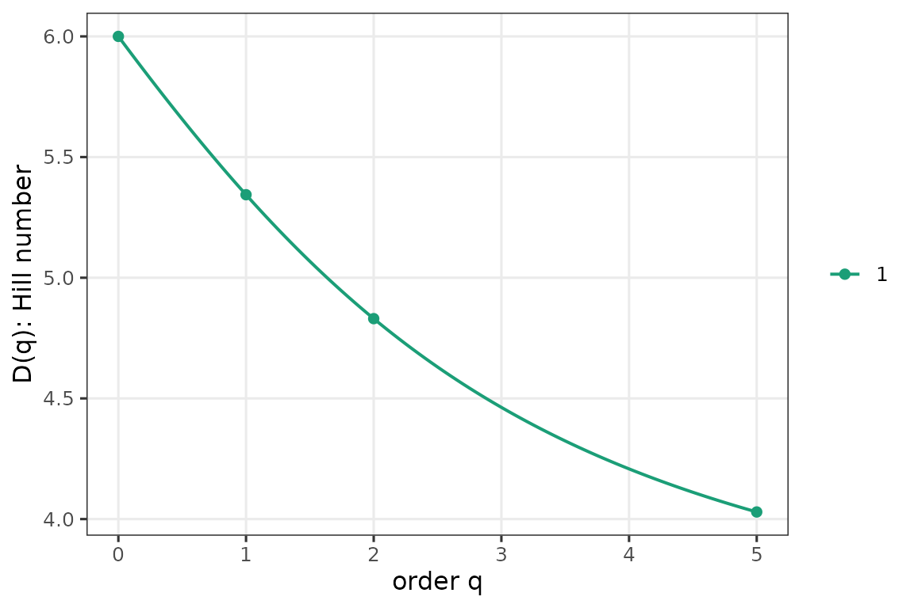
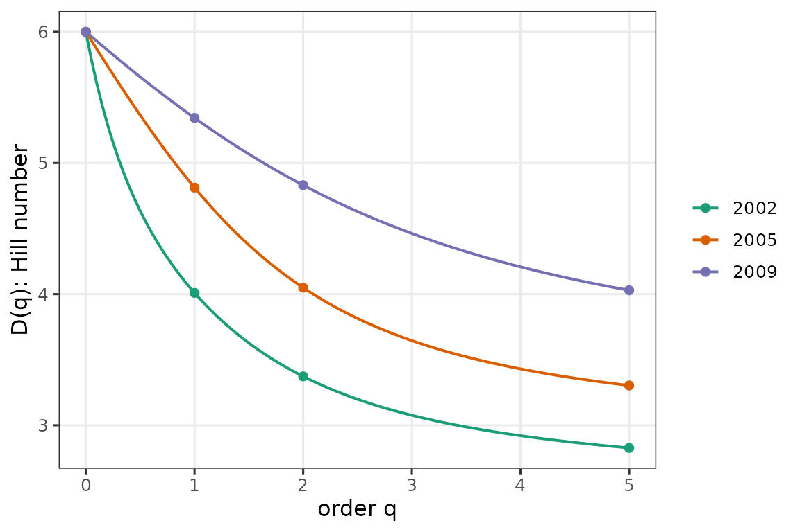
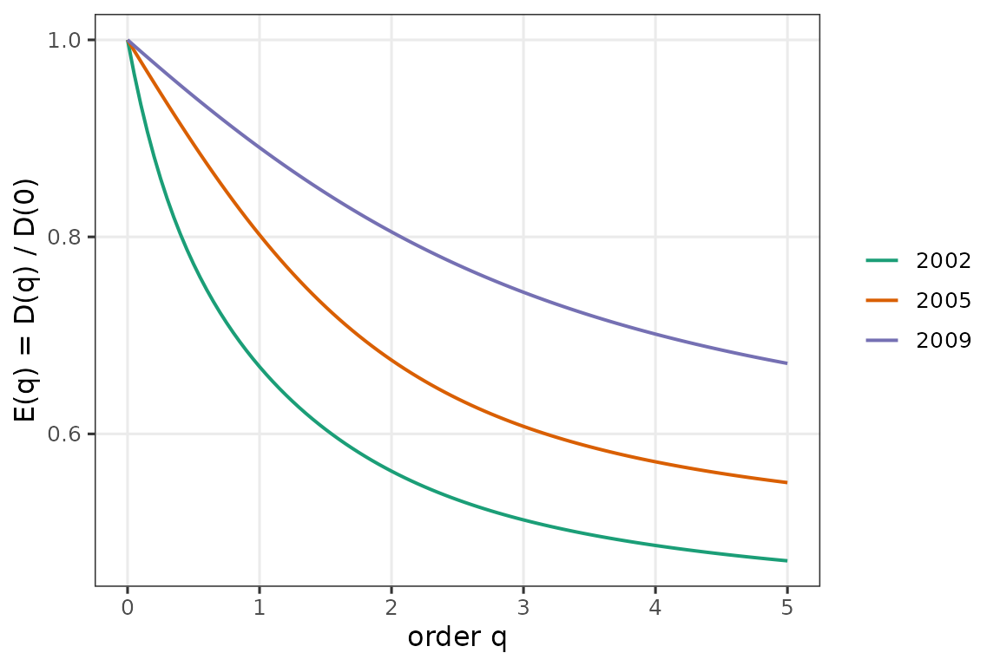
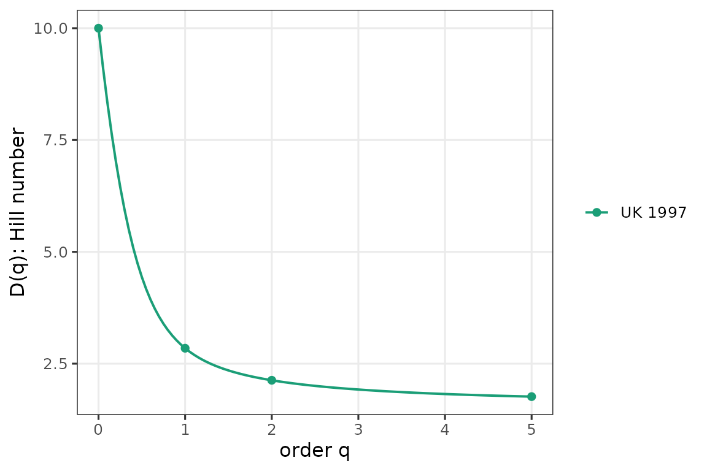
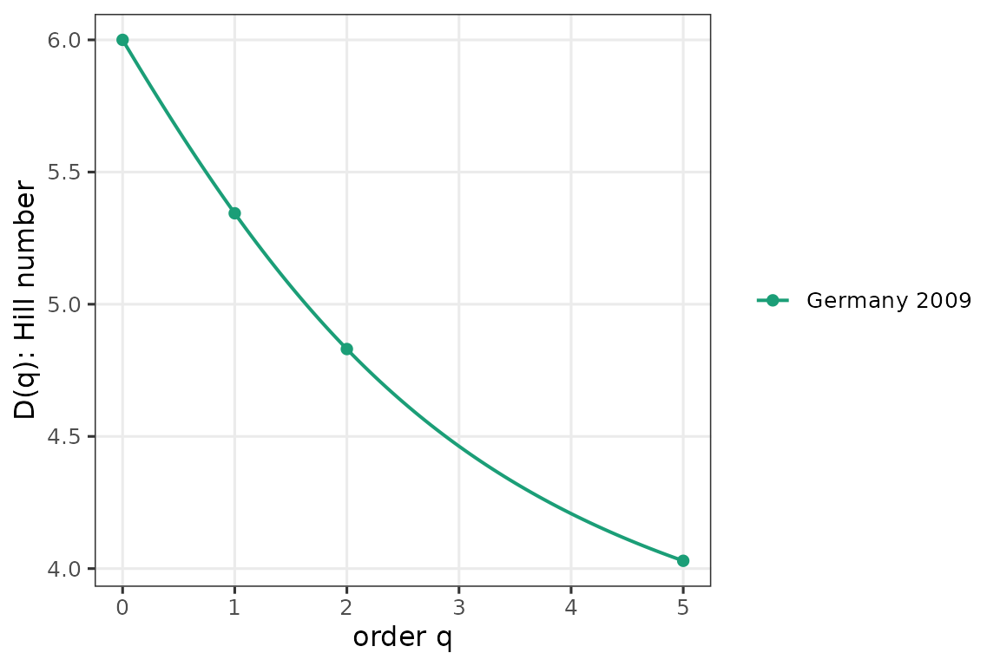

Party-labeled compositions
partyscape works on party-labeled
compositions: each column is a specific party, preserved across
elections. The package deliberately does not ask you to
row-sort shares. Sorting by size makes “column 1” mean “the largest
party that year,” which loses identity information when parties swap
positions across elections — the behaviour the package’s
alpha_beta_gamma() is designed to detect.
Concretely: use named vectors (or a matrix with named columns). The entry order reflects party identity, not rank.
germany_2009 <- c(CDU = 0.312, CSU = 0.072, SPD = 0.235,
FDP = 0.150, Gruene = 0.109, Linke = 0.122)
hill_number(germany_2009, c(0, 1, 2, Inf))
#> [1] 6.000000 5.343992 4.830498 3.205128
enp(germany_2009)
#> [1] 4.830498
dominance_gap(germany_2009)
#> CDU
#> 0.077
top_two(germany_2009)
#> [1] 0.547diversity_profile() sweeps q over a grid and returns an
object with print() / plot() /
autoplot() methods:
dp <- diversity_profile(germany_2009)
plot(dp)
Several systems at once
Rows are systems, columns are parties. Column order is stable across rows — party identity is preserved. Here are three German Bundestag elections. Notice SPD > CDU/CSU in 2002 and CDU/CSU > SPD in 2005/2009: the columns are a fixed set of parties, NOT ordered by size.
germany <- rbind(
`2002` = c(CDU = 0.315, CSU = 0.096, SPD = 0.416,
FDP = 0.078, Gruene = 0.091, Linke = 0.003),
`2005` = c(CDU = 0.293, CSU = 0.075, SPD = 0.362,
FDP = 0.099, Gruene = 0.083, Linke = 0.088),
`2009` = c(CDU = 0.312, CSU = 0.072, SPD = 0.235,
FDP = 0.150, Gruene = 0.109, Linke = 0.122)
)
plot(diversity_profile(germany))
#> Warning: as_composition(): renormalizing rows so each sums to 1 (max deviation
#> was 0.001).
Evenness profile — scaled so every curve starts at 1 at q = 0:
plot(evenness_profile(germany))
#> Warning: as_composition(): renormalizing rows so each sums to 1 (max deviation
#> was 0.001).
Two different-party systems
When two systems don’t share a party set (e.g., Germany and the UK), compute each profile separately and plot them alongside each other — padding different-length vectors with zeros would distort neither profile but would invite the row-sorted mental model that the package tries to avoid.
uk_1997 <- c(Labour = 0.634, Conservative = 0.250, LibDem = 0.070,
UUP = 0.015, SNP = 0.009, PlaidCymru = 0.006,
SDLP = 0.005, DUP = 0.003, SinnFein = 0.003,
Independent = 0.005)
plot(diversity_profile(uk_1997, id = "UK 1997"))
plot(diversity_profile(germany_2009, id = "Germany 2009"))
What to read next
-
vignette("crossings")— when ENP isn’t enough. -
vignette("beta")— alpha-beta-gamma over time. -
vignette("parlgov")— end-to-end with live ParlGov data. -
vignette("replication")— replicate every result from the paper.